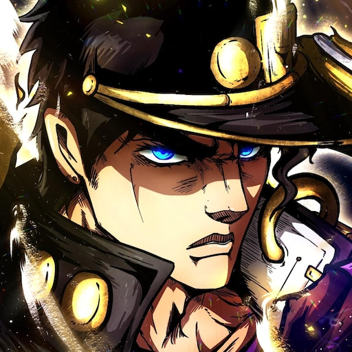
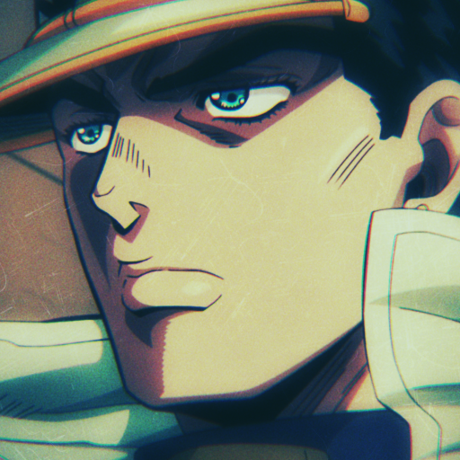
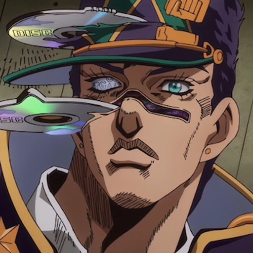

Part-3 |
Part-4 |
Part-6 |
| そして、集いしスターダスト 100年目の目醒めに 呼ばれて 男たちは向かう 時の砂を越えるJourney 鎖のよう連なる 絡み合う宿命(カルマ) 白金(ひかり)で断つ運命(さだめ) Stand up! Stand up! Stand up! 打ち込むのは All right now All right now All right now 誇りのBullet Break you down Break you down Break you down 拳放つ 聖なるヴィジョン Stand Proud! |
|
Part4和Part8中的場景「S市杜王町」 其實是以荒木老師的出生地 宮城縣仙台市為背景所繪 漫畫中出現的地名和登場角色的命名 都與仙台有著深厚的淵源。 像是Part4 的主角東方仗助住家所在的「杜王町定禪寺（淨禪寺）」 其實就在被稱為「杜之都」（森林城市）的 仙台的主要道路「定禪寺通」上。 |
|